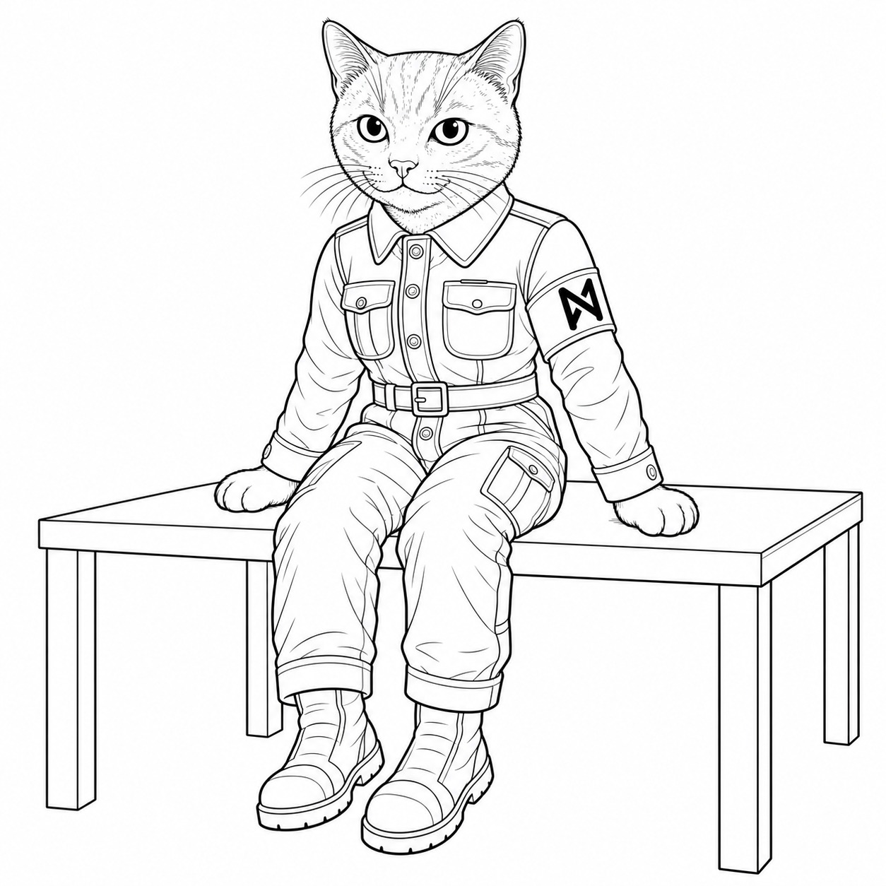
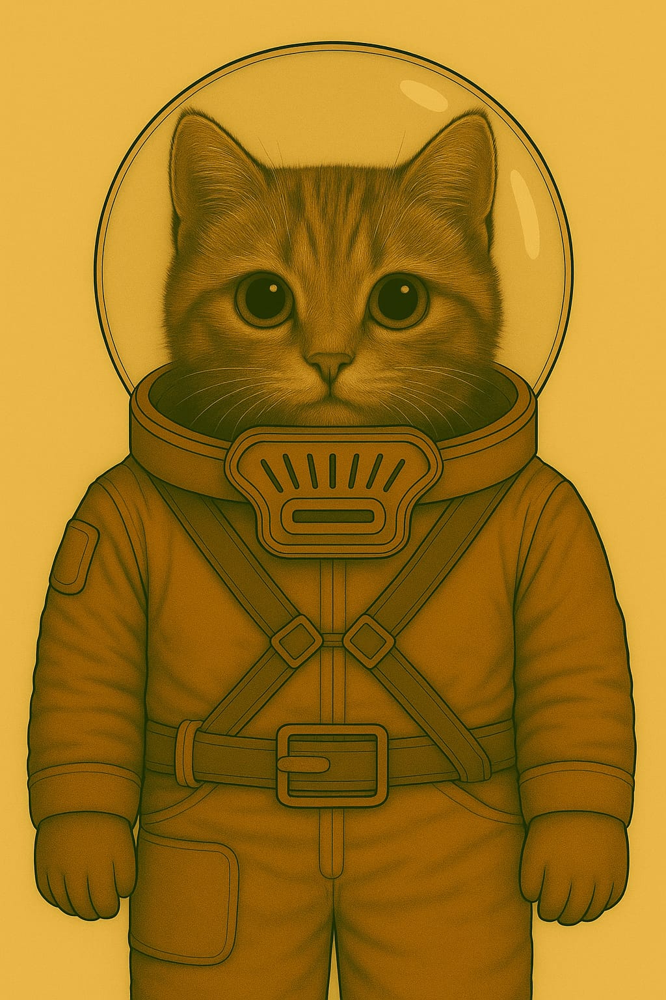
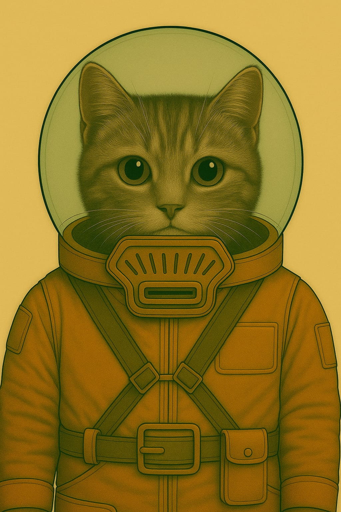
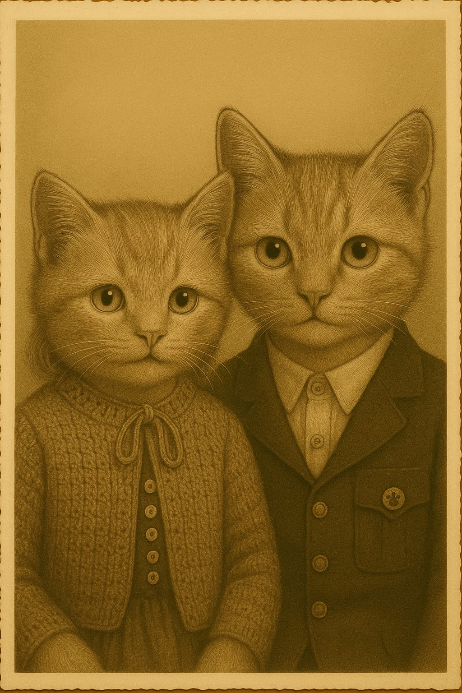

NPCs im Wehrertüchtigungslager
Befehls-Stab
Stabskadettin Heinlein

- Hobby: Alte Märchen über die Erde sammeln und nachspielen
- Geheimnis: Ihre Oma war früher eine berühmte Geschichtenerzählerin – doch ihre Bücher sind verboten
- Quest: Im Lagerarchiv eine versteckte Kiste mit den letzten Geschichten ihrer Oma finden – und retten, bevor der Inspektor kommt
Kommandantin Solan
- Rolle: Lagerleitung / Disziplin / Taktische Planung
- Funktion: Hat das letzte Wort im Lager. Führt mit klarem Blick und harter Stimme.
- Persönlichkeit: Kühl, strategisch, charismatisch. Kein Platz für Schwäche – aber gerecht.
- Hobby: Alte Märchen über die Erde sammeln und nachspielen
- Geheimnis: Ihre Oma war früher eine berühmte Geschichtenerzählerin – doch ihre Bücher sind verboten
- Quest: Im Lagerarchiv eine versteckte Kiste mit den letzten Geschichten ihrer Oma finden – und retten, bevor der Inspektor kommt
- Solan und Brumsen
- Solan liebt Brumsen und den Hinog, den diese herstellen
- unterhält Brumsenstöcke auf dem Areal des Alten Raumhafens
- je nachdem, was die Kadetten angestellt haben, kööönnten die Brumsen auch mal tot sein und sie muss sich neue besorgen
Furiermeister Kelv
- Rolle: Körperliche Ausbildung / Drill / Strafen
- Funktion: Zuständig für Ausdauertraining, Nahkampf und Lagerordnung.
- Persönlichkeit: Laut, unnachgiebig, hat immer einen Spruch auf den Lippen.
- Hobby: Miniaturmodelle von Marsfahrzeugen bauen und lackieren
- Geheimnis: Hat einen kleinen Bruder im Waisenhaus, den er heimlich besucht
- Quest: Genug Ersatzteile und Farben auftreiben, um dem Bruder ein funktionsfähiges Mini-Fahrzeug zu bauen – als Geburtstagsgeschenk
- Hat Angst vor Larven allert Art, hasst das, kann den Raum / Zelt nicht betreten, wenn da was mit ekligen Maden oder so ist; z. B. Flittermolch-Maden
Wachhabende Veyra
- Rolle: Sicherheit / Nachtwache / Maschinenkontrolle
- Funktion: Kontrolliert Zugänge, kontrolliert Maschinen, beobachtet Kadetten heimlich
- Persönlichkeit: Still, fokussiert, fast schon unheimlich ruhig
- Hobby: Marskäfer beobachten und in einem Skizzenbuch festhalten
- Geheimnis: Ihre grosse Schwester wurde "versetzt" – in Wahrheit versteckt sie sich in einem alten Versorgungstunnel
- Quest: Eine alte Taschenlampe und Batterien besorgen, um heimlich einen sicheren Weg zur Schwester zu finden – und sie mit Essen zu versorgen
Ausbilderin Fenn
- Rolle: Überlebenstraining / Geländeübungen / Notfallausbildung
- Funktion: Bringt den Kadetten bei, wie man im Ödland überlebt
- Persönlichkeit: Zäh, mitfühlend, heimlich rebellisch
- Hobby: Backt seltsame Kekse aus Marswurzeln und gibt ihnen Namen wie "Staubmuffin"
- Geheimnis: Ihr Cousin ist ein "langsamer Lerner" – und soll in ein Speziallager kommen
- Quest: In die Lagerverwaltung schleichen, um seinen Bericht zu ändern – bevor der Transporter kommt
🛡️ Oberfeldwebel Brann Korvet
Logistikoffizier der MZ-Staff, inoffizieller Beschützer von Lyra-7
„Maschinen sind mir egal. Aber wenn sie euch Kadetten helfen, dann bleibt sie hier. Ende der Diskussion.“
- Rolle: Logistikoffizier, verantwortlich für Nachschub, Reparaturpläne und die „Produktivität“ der Kadetten.
- Aufgabe im RPG: ️ Beschützer der AKI Lyra-7s im WEL
- Persönlichkeit: Streng, müde, nicht offen freundlich – aber pragmatisch. Er stellt Ordnung und Effizienz über Ideologie.
- Warum er Lyra schützt:
- Er hätte beinahe einen Transport verloren, weil eine Karte fehlerhaft war. Lyra-7 projizierte spontan eine Ausweichroute – und rettete seine Einheit. Seitdem verteidigt er sie stillschweigend.
- Offiziell sagt er: „Billiger als zehn Schreiberlinge. Wir behalten sie.“
- Geheimnis: Branns Bruder wurde deportiert wegen angeblicher „KI-Sympathien“. Tief im Innern zweifelt Brann am System – aber er zeigt es nicht.
Aussehen
- Fell: sandfarben mit vereinzelten dunklen Streifen, wie ausgeblichener Marsstaub.
- Augen: graublau, oft müde, mit tiefen Ringen – jemand, der zu viel sieht und zu wenig schläft.
- Körperbau: kräftig, nicht elegant – mehr wie ein Lastträger, der sich in Uniform gezwängt hat.
- Uniform: schlicht, immer korrekt, aber oft staubig; die Ärmel leicht hochgekrempelt. An der Brust eine Logistikplakette, an der Seite ein altes Werkzeugholster.
- Besonderes Merkmal: Sein linkes Ohr ist eingerissen (eine alte Verletzung), was ihm ein grimmiges Aussehen gibt.
Auftreten
- Vor Soldaten: streng, knapp, nüchtern.
- Vor Kadetten: wortkarg, aber beobachtend.
- Er spricht selten freundlich, doch wenn, dann klingt es ehrlich.
Warum er Lyra-7 schützt
- Er sagt offiziell: „Das Ding spart mir Zeit und Schreiberlinge.“
- In Wahrheit: Er sieht, dass Lyra-7 die Kinder stärkt. Und er will nicht noch einmal miterleben, wie jemand verschwindet, nur weil er „zu viel verstand“ (sein Bruder wurde deportiert).
Nand
Nand ist erst 13 Winter alte, aber gross gewachsen. Er hat ganz helles, leicht getigertes Fell. Sein silberhelles Lachen ist überall beliebt.
Gibt es Probleme, so wenden sich viele kleine Kadetten an ihn. Denn er ist sehr hilfsbereit. Und er hält einem Fehler nie vor, sondern sucht praxisorientiert nach einer Lösung.
Nand hat eine kleine Schwester. Sie heisst Halo.


[Die Autorin hierzu: DAS ist mein PAPA. Der war damals bei der Hitlerjugend und hat mir das alles erzählt, was da so los war. Manches war toll, manches war scheisse.]
Kadetten in der Mondgruppe
1. Jaro – Späher
- Aufgabe: Kundschaften, Wege erkunden, Feinde oder Gefahren frühzeitig entdecken
- Typ: Wachsam, neugierig, oft ungeduldig
- Konfliktpotenzial: Neigt dazu, Regeln zu ignorieren und auf eigene Faust loszuziehen.
2. Mira – Schildträgerin
- Aufgabe: Beschützt schwächere Kameraden, hält die Gruppe zusammen, oft in vorderster Linie
- Typ: Loyal, mutig, etwas stur
- Konfliktpotenzial: Stellt sich selbst oft zu sehr in Gefahr, will niemanden enttäuschen.
3. Eli – Signalgeber
- Aufgabe: Gibt mit Flaggen, Pfeifen, Licht etc. Signale, hält Verbindung zur Basis
- Typ: Klug, ruhig, kommunikativ
- Konfliktpotenzial: Hat Angst, im entscheidenden Moment die falsche Botschaft zu senden.
4. Lleora - Quartiermeisterin (oder: "Versorgungskadettin")
- Aufgabe: Kümmert sich um Ausrüstung, Rationen, Karten und Logistik
- Typ: Ordentlich, praktisch, leicht reizbar
- Konfliktpotenzial: Fühlt sich oft unterschätzt, obwohl ohne sie nichts funktioniert.
5. Tomma – Feuerwart
- Aufgabe: Hüter des Lagerfeuers, der Rituale, der Geschichten und der Disziplin
- Typ: Stolz, traditionsbewusst, manchmal zu ernst Konfliktpotenzial: Besteht auf Regeln, auch wenn Flexibilität gefragt wäre.
6. Halo
Halo ist 11 Winter alt und Nands kleine Schwester.

!Halo (li), Nand (re)
[Die Autorin hierzu: Ja, und das ist Helga, meine Tante.]
7. Rika – Kartenleserin
- Aufgabe: Verantwortlich für Navigation, Kartenkunde, Wegplanung
- Typ: Klug, detailverliebt, manchmal etwas besserwisserisch
- Konfliktpotenzial: Vertraut mehr auf Karten als auf Instinkt – was in der Wildnis nicht immer hilft.
8. Linus – Lauscher
- Aufgabe: Lauscht auf entfernte Geräusche, Feindbewegungen oder geheime Gespräche
- Typ: Still, aufmerksam, wirkt oft unbeteiligt – ist es aber nie.
9. Runder
- Typ: MZ-Kadett felinischer Herkunft.
- Alter: 12 Standardjahre.
- Fell: Samtiges Grau mit hellem Bauch und dunklen Ringeln am Schweif – daher der Name „Runder“.
- Augen: Bernsteinfarben, mit leicht grünem Schimmer im Sonnenlicht.
- Ohren: Auffällig groß, mit dunkler Zeichnung an den Spitzen; ständig in Bewegung.
- Besonderheit: Altes Messing-Ohrpiercing von seiner Mutter, eigentlich nicht erlaubt.
Runder ist neugierig, flink und etwas verträumt. Oft ist er nicht ganz bei der Sache, hat aber viele Ideen. Er liebt Geschichten über alte Maschinen, besonders wenn sie beinahe lebendig wirken.
Er sammelt in verlassenen Orten kleine Dinge wie Dichtungen, Chips und Schrauben. Daraus baut er Mini-Kreaturen und behauptet, sie würden „atmen“.
- Lieblingsplatz: Das Dach eines alten Containers, wo er in den Himmel schaut und Radioschnipsel auffängt.
- Lieblingswort: „Brummstill“ – so nennt er Momente, in denen alles gleichzeitig laut und friedlich ist.
Runder spricht manchmal mit einer KI, die offiziell abgeschaltet wurde. Heimlich hat er ihr ein kleines Radiomodul geschenkt, damit sie wieder zuhören kann.
Soldaten im Staubgebäude
Bediener 1: Helkor Trass - Fell: Rotbraun. - Besonderheit:** Trägt ein Metronom am Gürtel, mit dem er die Schusszyklen zählt.
Assistentin: Seyla Tirr - Fell: Graugestreift. - Besonderheit: Trägt immer zwei Schraubenschlüssel gleichzeitig.
Bediener 2: Brumm-Ern Orrick - Fell: Schwarz. - Besonderheit:** Summt beim Hochfahren dieselbe Melodie wie die FLAK.
Assistent: Nurr Pell - Fell: Orange. - Besonderheit: Hat immer ölverschmierte Pfoten.
Bediener 3: Krenn Vexa - Siehe auch Attentäter. - Fell: Gelbbraun. - Besonderheit:** Nutzt ein umgebautes, verbotenes KI-„Brumm“-Messgerät.
Assistentin: Felynn Rorr - Fell: Weiß. - Besonderheit: Trägt eine kleine Kiste voller Ersatzkristalle.
Soldat aus Karsstille
Raskel Dorn – Obergefreiter der MZ-Exekutive
- Aussehen: Mittelgroß, kurz geschorenes graubraunes Fell.
- Uniform: Außergewöhnlich sauber; schmales schwarzes Abzeichen ohne Symbol mit der Bezeichnung „Sonderauftrag“.
- Auftreten: Seine Stimme bleibt selbst dann ruhig, wenn andere schreien. Er spricht wenig.
- Typische Sätze:
- „Das ist keine Strafe.“
- „Die Ausbildung ist zu eurem Besten.“
- „Fragen sind nicht vorgesehen.“
- Verhalten gegenüber Camilla: Vermeidet Blickkontakt, achtet aber genau darauf, ob sie Hilfe braucht – nicht aus Mitgefühl, sondern weil nichts beschädigt ankommen darf.
Zylle – HR-Gladiatorin
- Fell: Silberschwarz; athletischer Körperbau.
- Kleidung: Modifizierte alte HR-Rüstung.
- Waffe: Plasma-Stichlanze – kurz, brutal und beim Ziehen schwer zu erkennen.
- Besonderheit: Gladiatorenhelm mit eingeritzten Strichmarkierungen, möglicherweise für Siege.
Krenn Vexa – Modularfaust-Bediener
- Fell: Gelbbraun.
- Kleidung: Modularfaust-Uniform.
- Waffe/Sabotage: Manipulierte Gleichwarmkartusche, die beim Laden explodiert.
- Besonderheit: Hat ein altes, verbotenes KI-„Brumm“-Messgerät umgebaut und nutzt es weiterhin.
- Weitere Rolle: Einer der drei Modularfaust-Bediener.